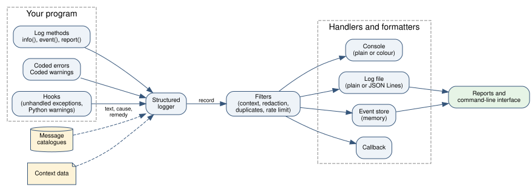
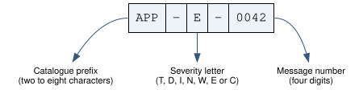
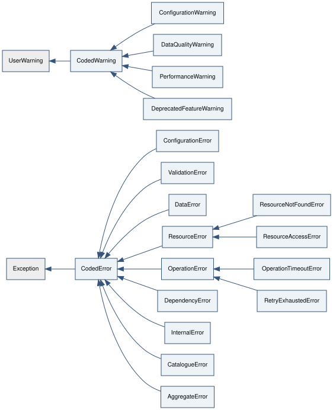
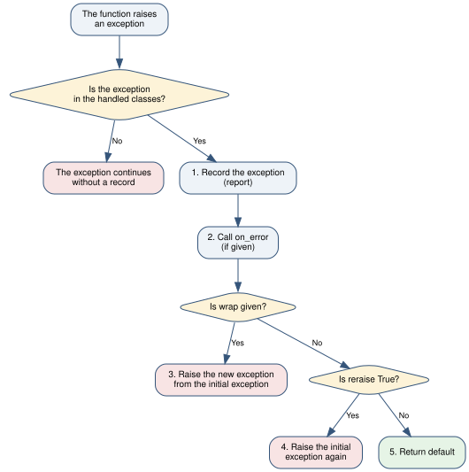

3. Concept of operations¶
3.1. Function of the library¶
A program must tell its user what occurs. Some information is about normal progress. Some information tells the user that a result is possibly incorrect. Some information tells the user that an operation failed.
annunciator gives one system for all this information. The system has
three primary functions:
- Record
The library records each event with a severity, a time, a text and structured data. It writes the events to the console, to a log file and to an event store in memory.
- Explain
Each message can have a message code. The code identifies a definition in a message catalogue. The definition gives the probable cause and the remedy. Thus the user knows what to do.
- Handle
The library gives tools that apply a standard policy to exceptions. The tools record an exception, change it into a different exception, try the operation again or collect it.
The library uses only the Python standard library. It operates together
with the standard logging module. Records from standard loggers go
through the same handlers.
3.2. Flow of data¶
Figure 3.1 shows how an event goes from your program to its destinations.


Figure 3.1 Flow of data in the library¶
The flow has these stages:
Your program calls a method of a structured logger. A coded error, a coded warning or a hook can also start an event.
If the event has a message code, the logger gets the text, the cause and the remedy from the catalogue.
The logger adds the context data and makes a record.
The filters of each handler examine the record. A filter can accept, reject or change the record.
The formatter of each handler changes the record into text.
The handler writes the text to its destination.
The report functions and the command-line interface read the events. The source is the event store or a JSON Lines log file.
3.3. Parts of the library¶
Part |
Function |
Module |
|---|---|---|
Severity |
Gives the importance of an event. |
|
Structured logger |
Records events with codes and fields. |
|
Context |
Adds the same data to all events of one operation. |
|
Message catalogue |
Contains the definitions of the messages. |
|
Coded error |
An exception that has a code, a cause and a remedy. |
|
Coded warning |
A Python warning that has a code, a cause and a remedy. |
|
Event |
The structured form of one record. |
|
Handler |
Sends records to a destination. |
|
Formatter |
Changes a record into plain text, colour text or JSON. |
|
Filter |
Accepts, rejects or changes records. |
|
Configuration |
Installs the handlers, the formatters, the filters and the hooks. |
|
Handling tools |
Apply a policy to exceptions. |
|
Hooks |
Record exceptions that no code caught, and Python warnings. |
|
Reports |
Read and select events, and make summaries. |
|
Flight recorder |
Keeps detailed records and writes them when a failure occurs. |
|
Progress and watchdog |
Record the progress of long operations and find stalls. |
|
Runs |
Record the manifest and the result of each run. |
|
Integrity |
Makes and examines tamper-evident log files. |
|
Multiprocess tools |
Send the records of many processes to one writer. |
|
Soft checks |
Examine data and give coded messages. |
|
Lint |
Finds incorrect message codes in source code. |
|
Test tools |
Collect events in tests. |
|
HTML report |
Writes a report of a run for a browser. |
|
Command-line interface |
Shows catalogues and examines log files. |
|
Sphinx extension |
Writes the message reference of your documentation. |
|
3.4. Severity¶
Each event has one of seven severities. Table 3.2 gives the use of each severity. Severities gives the full data.
Severity |
Type |
Use |
|---|---|---|
|
Information |
Data for a developer who looks for the cause of a fault. |
|
Information |
Normal progress. |
|
Warning |
The program continues, but a result is possibly incorrect. |
|
Error |
An operation did not complete. The program can continue with other operations. |
|
Error |
The program cannot continue. |
3.5. Message codes¶
A message code identifies one message definition. Figure 3.2 shows the three parts of a code.


Figure 3.2 Structure of a message code¶
The prefix identifies the catalogue. Usually, one program or one package has one catalogue. The severity letter is the first letter of the severity name. The message number is unique in the catalogue.
A message definition contains four items:
the code,
the message text, with optional replacement fields such as
{path},the probable cause,
the remedy.
The same definition supplies the text of the log record, the text of the exception and the text of the user documentation. Thus these three texts always agree.
3.6. Coded errors and coded warnings¶
A coded error is an exception with a message code. A coded warning is a Python warning with a message code. Figure 3.3 shows the classes that the library supplies. You can make your own subclasses.


Figure 3.3 Classes of coded errors and coded warnings¶
Use an error when the operation cannot continue. Use a warning when the operation continues but the user must know about a condition.
3.7. Error policy¶
The handling tools apply the same policy to each exception.
Figure 3.4 shows the policy of the handle_errors decorator
and the guard context manager.


Figure 3.4 Policy of handle_errors and guard¶
The library records each exception object only one time. If an exception goes through two handling tools, the log contains one record.
3.8. Functions for long runs and for evidence¶
Version 1.1.0 added functions that standard log tools do not usually have. They answer four questions.
- What occurred before the failure?
The flight recorder keeps the last detailed records in memory. It writes them only when a failure occurs. Refer to Figure 5.1.
- Does the run continue?
Progress records show the rate and the remaining time. A watchdog records a warning when an operation makes no progress.
- Can a different person do the same run again?
A run manifest records the software versions, the source revision, the configuration and the seed.
- Is the log file the same as when the program wrote it?
A chain of hashes connects the records. A change, a removal or an addition breaks the chain.
Monitor a long run and Record and compare runs give the procedures.
3.9. Relation to the standard logging module¶
A structured logger is a thin layer on a standard logger with the same name. Thus these conditions apply:
Modules that use
logging.getLoggersend their records through the handlers of the library.Handlers from other packages receive the records of structured loggers.
The severities have the same numeric values as the standard levels.
The library does not change the root logger before you call
configure.